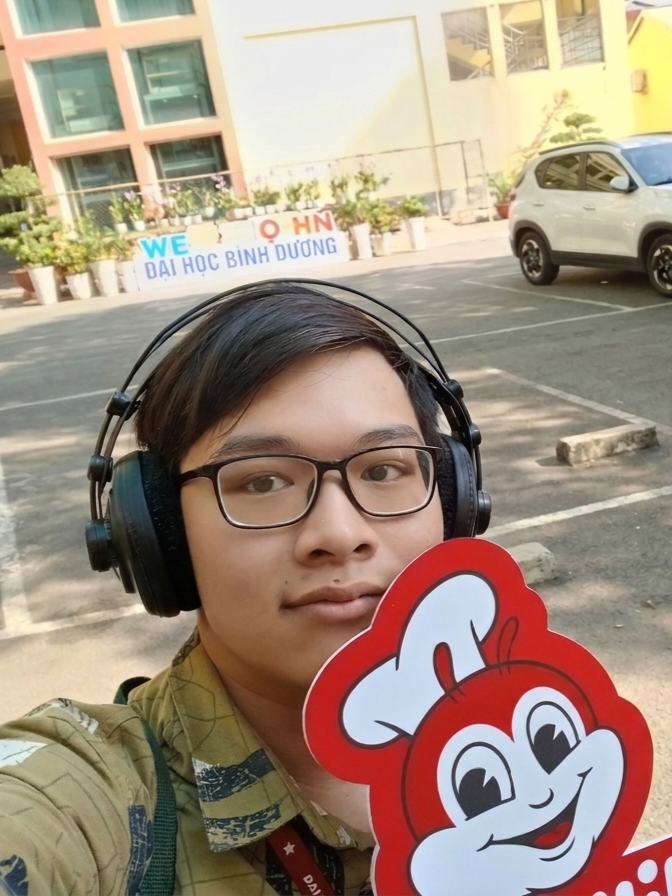
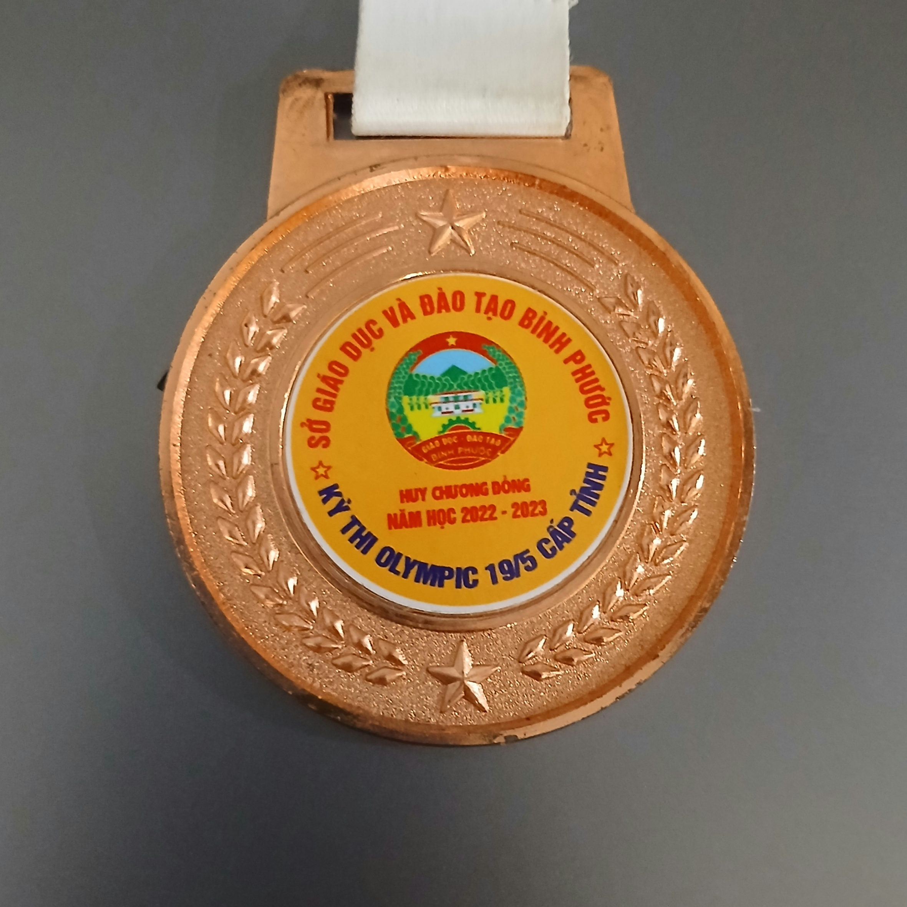
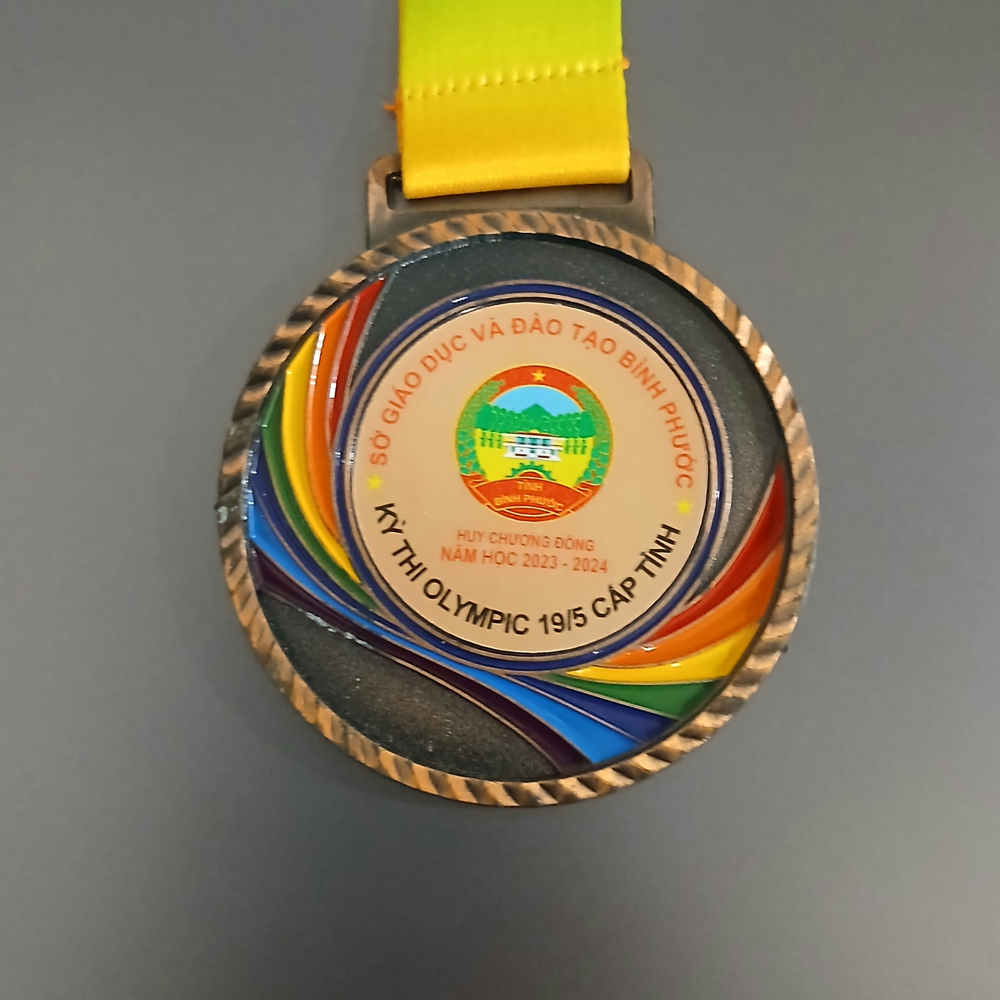
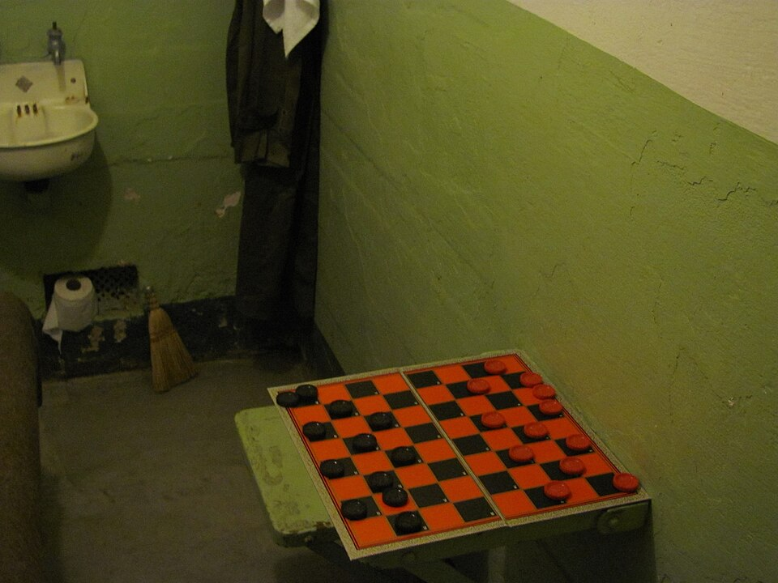

Chào đời — bắt đầu hành trình.
✳ PORTFOLIO CÁ NHÂN · 2026
Dương Quang
Gia Ân
Sinh viên Công nghệ thông tin / Kỹ thuật phần mềm
Một tâm hồn yêu nghệ thuật đang học cách biến những ý tưởng nhỏ thành phần mềm hữu ích.
Khám phá dự ánĐANG HỌC · LUÔN TÒ MÒ

01LỜI CHÀO
Lập trình bằng lý trí.
Sống bằng sự tử tế.
Mình là Dương Quang Gia Ân, sinh viên ngành Công nghệ thông tin / Kỹ thuật phần mềm. Mình là người có tấm lòng tốt, muốn giúp đỡ những người cần giúp. Mình luôn cố gắng sống trong sáng và quan tâm đến âm nhạc, nghệ thuật, trò chơi, YouTube và lập trình. Mình hầu như không sử dụng mạng xã hội như Facebook hay TikTok.
ĐÍCH ĐẾN
Trở thành một kỹ sư phần mềm giỏi, hiểu rõ nghề của mình và thấu hiểu mọi người.
CỐT LÕI CỦA MÌNHTử tếSáng tạoTò mòLàm đến nơi
02DÒNG THỜI GIAN
Từng bước một.
Một hành trình từ những nét vẽ đầu tiên đến những dòng mã đầu tiên.
Bắt đầu say mê nghệ thuật.
Âm nhạc trở thành một phần của mình.
Biểu diễn tại lễ hội mùa hè.
Khám phá công nghệ và CNTT.
Tham gia kỳ thi Olympic Tin học đầu tiên.
Tham gia kỳ thi Olympic Tin học lần thứ hai.
Bắt đầu học tại Đại học Bình Dương (BDU).
Sinh viên năm hai tại BDU — tiếp tục xây dựng.
03BỘ CÔNG CỤ
Kỹ năng
đang mài giũa.
Nền tảng vững chắc, luôn sẵn sàng học thêm.
01C++95%
02Python70%
03HTML & CSS40%
04Phần cứng máy tính50%
LÚC RẢNH, MÌNH THƯỜNG
Nghe nhạc · Chơi game nhẹ nhàng · Làm dự án code nho nhỏ
MÌNH TRÂN TRỌNG
Lòng tốt · Sự hào phóng · Sự thân thiện · Đồ ăn trông, ngửi và nếm bình thường
MÌNH KHÔNG HỢP VỚI
Món ăn kỳ lạ, nặng mùi hoặc không ngon (như nội tạng, mắm tôm) · Sự thô lỗ, văng tục, ích kỷ, tham lam và vô ơn
04GHI NHẬN
Nỗ lực được ghi nhận.
Hai huy chương Đồng Olympic cấp tỉnh — minh chứng cho sự kiên trì.

OLYMPIC TIN HỌC CẤP TỈNH2022 · BRONZE

OLYMPIC TIN HỌC CẤP TỈNH2023 · BRONZE
05ĐANG XÂY DỰNG
Ý tưởng thành
sản phẩm.
Một dự án bắt đầu từ đam mê, một dự án bắt đầu từ mong muốn tạo ra điều gì đó hữu ích.
PROJECT_01
Osu!mania Bot
Bot tự chơi game nhịp điệu Osu!mania. Hiện đang mắc kẹt trong chiếc laptop cũ đã hỏng — dự án đang chờ ngày được giải cứu.
Ảnh: W.carter / Wikimedia Commons · CC BY-SA 4.0
Xem kho mã mẫu
PROJECT_02Zero-Ads Checkers
Cờ đam chơi trực tiếp với bot JS cấp độ dễ. Mục tiêu: biến trò chơi thành game online miễn phí, không quảng cáo — không bẫy, chỉ có nước đi.
Ảnh: Slyronit / Wikimedia Commons · CC BY-SA 4.0
Chơi thử ngay bên dướiTRẢI NGHIỆM TƯƠNG TÁC · 01
Đến lượt bạn.
Bạn đi quân đỏ. Chọn quân rồi chọn ô chéo để di chuyển hoặc ăn quân. Bot sẽ trả lời bằng một nước đi ngẫu nhiên.
06GIỮ LIÊN LẠC
Có ý tưởng?
Mình sẵn sàng nghe.
Gửi lời nhắn — biểu mẫu sẽ kiểm tra thông tin trước khi hiển thị xác nhận.